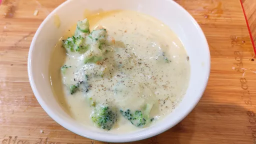

Broccoli cheese soup
In the world of cheaty foods, broccoli cheese soup has always seemed like one of the cheatiest. There's nothing wrong with owning it: Cheese is delicious, and not every single lunch has to be virtuous. Still, I sometimes wish that the broccoli part of the whole thing was taken a little more seriously, if only for the purely selfish reason that I love broccoli. My goal here was to create a recipe for broccoli cheese soup that was as comforting as the ultra-cheesy kind you typically find, but simultaneously really tasted like broccoli.
Servings: 6
Total: 1 hr 0 mins
 Vegetarian
Vegetarian
Ingredients
- 700 g broccoli
- 2 tablespoons vegetable oil
- Kosher salt and freshly ground black pepper
- 45 g unsalted butter
- 1 medium onion, sliced (about 6 ounces; 170g)
- 1 medium carrot, peeled and finely diced (about 4 ounces; 120g)
- 3 medium cloves garlic, thinly sliced
- 475 ml water, or homemade or store-bought low-sodium chicken stock
- 700 ml whole milk
- 1 small russet potato, peeled and sliced (about 4 ounces; 120g)
- 340 g sharp cheddar cheese, grated (see note)
- 240 g deli-style American cheese, diced (see note)
- 3 g mustard powder
- Dash of hot sauce, such as Frank's RedHot
Instructions
- Separate broccoli700 ginto florets and stems. Cut florets into bite-size pieces and set aside. Roughly chop stems and reserve separately.
- Heat oil2 tablespoonsin a large Dutch oven over high heat until shimmering. Addbroccoli700 gflorets and cook, without moving, until charred on the bottom, about 1 minute. Stir, season with salt and pepper, and continue cooking, stirring occasionally, until tender and charred on several surfaces, about 1 minute longer. Transfer to a rimmed baking sheet to cool.
- Return Dutch oven to medium heat and add butter45 g,onion1 medium,carrot1 medium, andbroccoli700 gstems. Season with salt and pepper and cook, stirring frequently, until tender but not browned, about 5 minutes, lowering heat if necessary. Addgarlic3 medium clovesand cook, stirring, until fragrant, about 30 seconds.
- Add water475 mlor chicken stock,milk700 ml, andpotato1 smalland bring to a boil over high heat. Reduce to a bare simmer and cook, stirring occasionally, untilbroccoli700 gandpotato1 smallare completely tender, about 30 minutes.
- In a large bowl, toss both cheeses together along with mustard powder3 g. Using an immersion blender or working in batches with a countertop blender, blend soup, adding cheese a handful at a time, until completely smooth. Stir in hot sauce and season to taste with salt and pepper. Stir in reservedbroccoli700 gflorets and pulse with blender a few more times until a few pieces are broken down, but most bite-size pieces remain. Serve immediately.
www.seriouseats.com Short Link Long Link